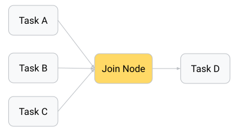
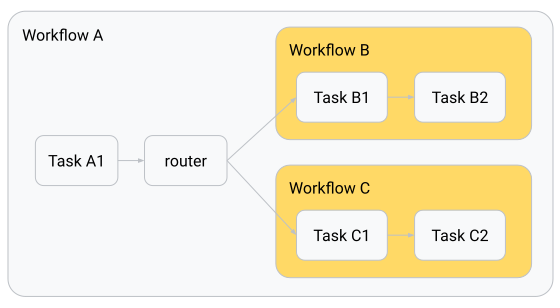

Build graph routes for agent workflows¶
Graph-based workflows in ADK define agent logic as a graph of execution nodes and edges, allowing you to build more reliable processes that combine artificial intelligence (AI) reasoning and code logic. These workflows allow you to create logical routes of execution nodes that can encapsulate code functions, AI-powered agents, Tools, and human input. By explicitly mapping out routing logic, this approach allows you to define a specific, step-wise process workflow in code, providing improved precision and reliability over purely prompt-based agents.

Figure 1. Visualization of a task graph and the routing code to implement it.
ADK Go v2.0.0 provides the following approach to graph-based workflows:
Graph engine (workflowagent + workflow.Edge): A node-and-edges
graph API that maps directly to Python's Workflow(edges=[...]).
Nodes are defined with workflow.NewFunctionNode, workflow.NewAgentNode,
or workflow.NewDynamicNode, edges are declared as []workflow.Edge, and
the whole graph is wrapped in a workflowagent.New call:
edges := workflow.Concat(
workflow.Chain(workflow.Start, classifyNode),
[]workflow.Edge{
{From: classifyNode, To: responseA, Route: workflow.StringRoute("output-1")},
{From: classifyNode, To: responseB, Route: workflow.StringRoute("output-2")},
{From: classifyNode, To: responseC, Route: workflow.StringRoute("output-3")},
},
)
rootAgent, _ := workflowagent.New(workflowagent.Config{
Name: "routing_workflow",
Edges: edges,
})
The advantage of using a graph-based agent workflow is the significant increase in control, predictability, and reliability over prompt-based agents. By defining the overall process workflow in code, you gain more control over how tasks are routed and executed. This structured node definition improves the predictability of agents and enhances reliability for complex tasks that require defined steps and process management.
Get started with graph-based workflows in ADK by checking out Graph-based agent workflows.
Nodes¶
A graph is composed of execution nodes. These nodes can be Agents, ADK Tools, human input tasks, or code functions you write. Nodes can take inputs from previously executed nodes, and emit data through Event objects.
The following shows a simple FunctionNode that handles text inputs and sends a text output:
ADK TypeScript v2.0.0 では、プライマリノードタイプは関数を node() に渡して作成する FunctionNode です。ハンドラーは常に (ctx, input) パラメータを受け取ります。ADK はパラメータ名による値の挿入を行いません。値を直接返すと、イベントの output フィールドに自動的にラップされます。route や content も設定する必要がある場合は、明示的な形式である createEvent({output}) を返します。
import {
createEvent,
node,
NodeContext,
Workflow,
type FunctionNodeHandler,
} from '@google/adk';
/** A bare return value: boxed into an event's `output` for you. */
const myFunctionNode: FunctionNodeHandler<string, string> = (
_ctx: NodeContext,
nodeInput: string,
) => {
const inputTextModified = nodeInput.toUpperCase();
return inputTextModified;
};
/** The explicit form — identical behaviour, useful when you also set `route`. */
const myExplicitEventNode = (_ctx: NodeContext, nodeInput: string) =>
createEvent({ output: `${nodeInput} IS AWESOME!` });
export const rootAgent = new Workflow({
name: 'function_node_pipeline',
edges: [
[
'START',
node(myFunctionNode, { name: 'my_function_node' }),
node(myExplicitEventNode, { name: 'add_suffix' }),
],
],
});
In ADK Go v2.0.0, the primary node type is workflow.NewFunctionNode.
A FunctionNode wraps a plain Go function: the function returns a typed
value, and the framework automatically wraps it in a session.Event,
setting event.Output. The successor node receives this value as its
typed input parameter — no manual state writes or event construction
needed:
// newFunctionNodePipeline demonstrates workflow.NewFunctionNode as the primary
// v2 node type. A FunctionNode wraps a plain Go function: the function returns
// a typed value, and the framework automatically wraps it in a session.Event,
// setting event.Output. The successor node receives this value as its typed
// input parameter.
//
// This is the direct Go equivalent of the Python FunctionNode:
//
// def my_function_node(node_input: str):
// return Event(output=node_input.upper())
func newFunctionNodePipeline() (agent.Agent, error) {
upperFn := func(_ agent.Context, input string) (string, error) {
return strings.ToUpper(input), nil
}
suffixFn := func(_ agent.Context, input string) (string, error) {
return input + " IS AWESOME!", nil
}
// workflow.NewFunctionNode wraps each function as a graph node.
// workflow.Chain wires them in order: START → upper → suffix.
// The output of upperFn is delivered as the typed input of suffixFn
// via event.Output — no session state writes are needed.
nodeA := workflow.NewFunctionNode("upper", upperFn, workflow.NodeConfig{})
nodeB := workflow.NewFunctionNode("suffix", suffixFn, workflow.NodeConfig{})
return workflowagent.New(workflowagent.Config{
Name: "function_node_pipeline",
Description: "Demonstrates workflow.NewFunctionNode data flow via Event.Output.",
Edges: workflow.Chain(workflow.Start, nodeA, nodeB),
})
}
For more information about transferring data between nodes, see Data handling for agent workflows.
Workflow graphs syntax¶
You define a graph by composing workflow agents. This section provides an overview of the common routing patterns.
Caution: Workflow agent limitations
You can add LlmAgents to graph-based workflows. However, they must be configured for single-turn or task mode. For more information about agent modes, see Build collaborative agent teams.
Route sequences¶
A sequential route runs each node once, in the listed order.
The edges array uses the START keyword to indicate the beginning of a
graph execution, with each listed node executed in sequence:
'START' で始まる edges の行は、リストされた各ノードを順番に1回ずつ実行し、すべてのノードの戻り値を次のノードに渡します。
edges: [['START', taskANode]] // 単一ノード
edges: [['START', taskANode, taskBNode, taskCNode]] // 3つのノードを順に実行
複数の行に 'START' を指定すると、並列パスが作成されます。詳細については、ファンアウトと結合 を参照してください。
import { node, NodeContext, Workflow } from '@google/adk';
const taskANode = node(
(_ctx: NodeContext, nodeInput: string) => `Summary: ${nodeInput.trim()}`,
{ name: 'task_A_node' },
);
const taskBNode = node(
(_ctx: NodeContext, summary: string) => summary.toUpperCase(),
{ name: 'task_B_node' },
);
const taskCNode = node(
(_ctx: NodeContext, shouted: string) => `${shouted} (done)`,
{ name: 'task_C_node' },
);
export const rootAgent = new Workflow({
name: 'sequential_workflow',
edges: [['START', taskANode, taskBNode, taskCNode]],
});
workflow.Chain(workflow.Start, nodeA, nodeB, nodeC) wires nodes into a
sequential edge slice. Each node's typed return value is forwarded to the
next node via event.Output — no session state writes needed:
// newSequentialNodes builds a two-step sequential workflow using the v2 graph
// engine. workflow.Chain wires the nodes in order; each node's typed return
// value is forwarded to the next node via event.Output.
//
// This is the Go equivalent of:
//
// edges=[("START", task_A_node, task_B_node)]
func newSequentialNodes() (agent.Agent, error) {
// task_A_node: transforms the user's input.
taskANode := workflow.NewFunctionNode("task_A_node",
func(_ agent.Context, input string) (string, error) {
return "Summary: " + strings.TrimSpace(input), nil
},
workflow.NodeConfig{},
)
// task_B_node: receives task A's output as its typed input and produces
// the final result. No session state reads needed.
taskBNode := workflow.NewFunctionNode("task_B_node",
func(_ agent.Context, summary string) (string, error) {
return strings.ToUpper(summary), nil
},
workflow.NodeConfig{},
)
return workflowagent.New(workflowagent.Config{
Name: "sequential_workflow",
Description: "Runs task A then task B in order via workflow.Chain.",
Edges: workflow.Chain(workflow.Start, taskANode, taskBNode),
})
}
Route branches and conditional execution¶
In Python, branching is handled by a FunctionNode that returns an
Event(route=...) value, which the edges dict dispatches to different nodes.
from google.adk import Event, Workflow
from google.adk.agents import Agent
def router(node_input: str):
"""Route to task B or C based on node_input."""
if condition(node_input):
return Event(route="RUN_TASK_C")
return Event(route="RUN_TASK_B")
task_B_node = Agent(name="task_B_agent") # An agent to execute node B
def task_C_node(node_input: str):
"""A FunctionNode to execute node C."""
return Event(output="Task C completed")
root_agent = Workflow(
name="routing_workflow",
edges=[
("START", task_A_node, router),
(router,
{
# "route value": node_to_run
"RUN_TASK_B": task_B_node,
"RUN_TASK_C": task_C_node,
},
),
],
)
分岐には、route 値を出力するノードと、各ルート値をそれを処理するノードにマッピングする edge の行が必要です。ルート値には文字列、数値、またはブール値を使用できます。DEFAULT_ROUTE 設定は、同じソースノード上の他のどのルートにも一致しない場合にマッチします。分岐のターゲットにはノードライクな任意の値を指定できます。この例では、taskBNode は LlmAgent、taskCNode は関数です。
import {
createEvent,
LlmAgent,
node,
NodeContext,
Workflow,
} from '@google/adk';
const taskANode = node(
(_ctx: NodeContext, nodeInput: string) => nodeInput.trim(),
{ name: 'task_A_node' },
);
/** Stands in for an application-specific branch condition. */
const condition = (nodeInput: string) => /\d/.test(nodeInput);
/** Routes to task B or C based on nodeInput. */
const router = node(
(_ctx: NodeContext, nodeInput: string) =>
condition(nodeInput)
? createEvent({ route: 'RUN_TASK_C', output: nodeInput })
: createEvent({ route: 'RUN_TASK_B', output: nodeInput }),
{ name: 'router' },
);
const taskBNode = new LlmAgent({
name: 'task_B_agent',
model: 'gemini-flash-latest',
instruction: 'Answer the user in a single short sentence.',
});
const taskCNode = node(() => 'Task C completed', { name: 'task_C_node' });
export const rootAgent = new Workflow({
name: 'routing_workflow',
edges: [
['START', taskANode, router],
[
router,
{
RUN_TASK_B: taskBNode,
RUN_TASK_C: taskCNode,
},
],
],
});
In ADK Go v2.0.0, conditional dispatch uses the workflow graph engine.
A node sets Event.Routes to one or more string route keys, and each
workflow.Edge selects its successor using a workflow.Route matcher:
workflow.StringRoute("category")— matches a single string valueworkflow.IntRoute(n)orworkflow.MultiRoute[int]{1, 2, 3}— matches integer valuesworkflow.BoolRoute(true)— matches a boolean valueworkflow.Default— matches when no other route on the same source node matches
The following pattern is the Go equivalent of the Python router:
// classifyNode emits an Event with Routes=[]string{"BUG"},
// ["CUSTOMER_SUPPORT"], or ["LOGISTICS"] based on the message.
edges := workflow.Concat(
workflow.Chain(workflow.Start, processMessage, classifyNode),
[]workflow.Edge{
{From: classifyNode, To: bugHandler, Route: workflow.StringRoute("BUG")},
{From: classifyNode, To: supportHandler, Route: workflow.StringRoute("CUSTOMER_SUPPORT")},
{From: classifyNode, To: logisticsHandler, Route: workflow.StringRoute("LOGISTICS")},
},
)
rootAgent, _ := workflowagent.New(workflowagent.Config{
Name: "routing_workflow",
Edges: edges,
})
workflow.EdgeBuilder provides a fluent alternative to assembling the
[]workflow.Edge slice by hand. The builder's Add, AddFanOut, and
AddFanIn methods express the same topology with less repetition:
eb := workflow.NewEdgeBuilder()
eb.Add(workflow.Start, processMessage)
eb.Add(processMessage, classifyNode)
eb.AddRoute(classifyNode, bugHandler, workflow.StringRoute("BUG"))
eb.AddRoute(classifyNode, supportHandler, workflow.StringRoute("CUSTOMER_SUPPORT"))
eb.AddRoute(classifyNode, logisticsHandler, workflow.StringRoute("LOGISTICS"))
rootAgent, _ := workflowagent.New(workflowagent.Config{
Name: "routing_workflow",
Edges: eb.Build(),
})
For complete, runnable routing examples see: string routing, int / multi-value routing, and LLM-driven routing.
Prebuilt agents: encoding routing in state
When using sequentialagent / parallelagent / loopagent instead
of the graph engine, there is no Event.Routes dispatch. Encode the
routing decision in session state via OutputKey and let downstream
agents inspect it in their Instruction template, or use a loopagent
with an Escalate-based exit — see the
loop and escalation example below.
並行タスク: Fan-out および Join パス¶
You can create graphs that split execution across multiple, parallel nodes, and typically you need to assemble the output of each node for further processing. This task execution pattern has two stages. The workflow first fans out when it starts multiple parallel tasks, and then it re-joins those paths when those tasks are completed before proceeding to the next step.

Figure 2. The output of parallel task nodes can be assembled and joined before passing results to the next step.
You accomplish the join step by using a JoinNode object, which waits for each parallel task to complete and then passes the collection of outputs from these nodes to the next node.
JoinNode はファンイン (fan-in) バリアです。このロジックメカニズムは、すべての先行タスクが完了するのを待機し、後続ノードに先行ノード名をキーとするレコードを渡します。
import { JoinNode, node, NodeContext, Workflow } from '@google/adk';
const parallelTaskA = node(
(_ctx: NodeContext, text: string) => text.toUpperCase(),
{ name: 'parallel_task_A' },
);
const parallelTaskB = node((_ctx: NodeContext, text: string) => text.length, {
name: 'parallel_task_B',
});
const parallelTaskC = node(
(_ctx: NodeContext, text: string) => text.split('').reverse().join(''),
{ name: 'parallel_task_C' },
);
const myJoinNode = new JoinNode({ name: 'my_join_node' });
const finalTaskD = node(
(_ctx: NodeContext, results: Record<string, unknown>) =>
[
`Uppercase: ${results['parallel_task_A']}`,
`Length: ${results['parallel_task_B']}`,
`Reversed: ${results['parallel_task_C']}`,
].join('\n'),
{ name: 'final_task_D' },
);
export const rootAgent = new Workflow({
name: 'fan_out_workflow',
edges: [
['START', parallelTaskA, myJoinNode],
['START', parallelTaskB, myJoinNode],
['START', parallelTaskC, myJoinNode],
[myJoinNode, finalTaskD],
],
});
ADK Go v2.0.0 provides workflow.NewJoinNode for true fan-in in the
graph engine: fan-out edges from workflow.Start (or any shared source
node) feed in parallel to the join node, which waits for all of them to
complete before emitting a map[string]any keyed by predecessor node name
to the next node.
workflow.EdgeBuilder makes the fan-out / fan-in wiring concise with its
dedicated AddFanOut and AddFanIn helpers (as shown in the
complex workflow example):
gatherNode := workflow.NewJoinNode("gather")
eb := workflow.NewEdgeBuilder()
eb.AddFanOut(workflow.Start, researchNodeA, researchNodeB, researchNodeC)
eb.AddFanIn(gatherNode, researchNodeA, researchNodeB, researchNodeC)
eb.Add(gatherNode, formatNode)
eb.Add(formatNode, synthesisNode)
rootAgent, _ := workflowagent.New(workflowagent.Config{
Name: "research_pipeline",
Edges: eb.Build(),
})
The following snippet shows the complete fan-out / join pattern using
workflow.NewJoinNode and EdgeBuilder.AddFanOut / AddFanIn:
// newParallelFanOut builds a fan-out / join workflow using the v2 graph engine.
// Three research nodes run in parallel from Start; workflow.NewJoinNode waits
// for all of them to complete and emits a map[nodeName]output to the format
// node, which assembles the results for a synthesis node.
//
// Graph topology:
//
// START ─┬─> research_A ──┐
// ├─> research_B ──┼─> gather (JoinNode) ─> format ─> synthesis
// └─> research_C ──┘
//
// Python equivalent:
//
// edges=[
// ("START", research_A, my_join_node),
// ("START", research_B, my_join_node),
// ("START", research_C, my_join_node),
// (my_join_node, format_node),
// (format_node, synthesis_node),
// ]
func newParallelFanOut() (agent.Agent, error) {
researchA := workflow.NewFunctionNode("research_A",
func(_ agent.Context, _ any) (string, error) {
return "Fact about renewable energy.", nil
},
workflow.NodeConfig{},
)
researchB := workflow.NewFunctionNode("research_B",
func(_ agent.Context, _ any) (string, error) {
return "Fact about electric vehicles.", nil
},
workflow.NodeConfig{},
)
researchC := workflow.NewFunctionNode("research_C",
func(_ agent.Context, _ any) (string, error) {
return "Fact about carbon capture.", nil
},
workflow.NodeConfig{},
)
// workflow.NewJoinNode waits for all predecessors (research_A, research_B,
// research_C) to complete and emits a map[nodeName]output to its successor.
gatherNode := workflow.NewJoinNode("gather")
// formatNode receives map[string]any from gatherNode and assembles a
// combined prompt string.
formatNode := workflow.NewFunctionNode("format",
func(_ agent.Context, results map[string]any) (string, error) {
return fmt.Sprintf("A: %v\nB: %v\nC: %v",
results["research_A"],
results["research_B"],
results["research_C"],
), nil
},
workflow.NodeConfig{},
)
synthesisNode := workflow.NewFunctionNode("synthesis",
func(_ agent.Context, prompt string) (string, error) {
return "Combined report: " + prompt, nil
},
workflow.NodeConfig{},
)
// EdgeBuilder.AddFanOut fans workflow.Start out to all three research nodes.
// EdgeBuilder.AddFanIn routes all three research nodes into gatherNode.
eb := workflow.NewEdgeBuilder()
eb.AddFanOut(workflow.Start, researchA, researchB, researchC)
eb.AddFanIn(gatherNode, researchA, researchB, researchC)
eb.Add(gatherNode, formatNode)
eb.Add(formatNode, synthesisNode)
return workflowagent.New(workflowagent.Config{
Name: "fan_out_workflow",
Description: "Parallel research fan-out with JoinNode barrier and synthesis.",
Edges: eb.Build(),
})
}
警告: JoinNode に接続するノードは出力を生成する必要があります
JoinNode は、すべての先行ノードが終了した後にのみ解放されます。結合に供給するすべてのノードが独自の出力を生成することを確認し、失敗する可能性のあるノードには再試行構成を設定してください。出力を生成せずに終了した先行ノードがあると、そのブランチの値が結合に存在しなくなり、その結果のエラーは原因となったノードから離れたダウンストリームで発生します。
ネストされたワークフロー¶
When building more complex workflows, you may want to encapsulate the functionality for specific tasks into reusable workflows. One or more workflow agents can be used as a sub-agent within another workflow agent to accomplish this goal.

Figure 3. Nested workflow agents as sub-agents inside a parent workflow.
from google.adk import Workflow
root_agent = Workflow(
name="parent_workflow",
edges=[
("START", task_A1, router),
(router, {
"RUN_WORKFLOW_B": workflow_B,
"RUN_WORKFLOW_C": workflow_C,
},
),
],
)
Nested workflow data output¶
Output for nested Workflow objects works slightly differently from individual nodes. When the nested workflow completes one of its nodes, it transmits data to the next node in the nested workflow's graph and the system bubbles up the Event for that node to the parent workflow for process traceability. When the nested workflow completes the last node in its process, the parent node extracts data from the final leaf nodes and emits it as the output of the nested workflow.
Workflow 自体がノードであるため、再利用可能なサブプロセスをカプセル化するために、別のワークフローの edges 内で使用できます。
import { createEvent, node, NodeContext, Workflow } from '@google/adk';
const taskA1 = node(
(_ctx: NodeContext, nodeInput: string) => nodeInput.trim(),
{
name: 'task_A1',
},
);
const router = node(
(_ctx: NodeContext, text: string) =>
createEvent({
route: text === text.toUpperCase() ? 'RUN_WORKFLOW_C' : 'RUN_WORKFLOW_B',
output: text,
}),
{ name: 'router' },
);
/**
* Upper-cases the first letter of each word.
*
* Unicode-aware on purpose: `\b\w` is ASCII-only, so `ü` never matches — and
* the word boundary it creates before the *next* ASCII letter upper-cases that
* one instead ("strässe" -> "SträSse"). A letter whose uppercase form is more
* than one code point (German `ß` -> "SS") is left alone rather than mangled.
*/
const titleCase = (text: string) =>
text.replace(/(^|\P{L})(\p{L})/gu, (_match, sep: string, ch: string) => {
const upper = ch.toUpperCase();
return sep + ([...upper].length === 1 ? upper : ch);
});
const workflowB = new Workflow({
name: 'workflow_B',
edges: [
[
'START',
node((_ctx: NodeContext, text: string) => titleCase(text), {
name: 'b_title_case',
}),
node((_ctx: NodeContext, text: string) => `[B] ${text}`, {
name: 'b_frame',
}),
],
],
});
const workflowC = new Workflow({
name: 'workflow_C',
edges: [
[
'START',
node((_ctx: NodeContext, text: string) => text.toLowerCase(), {
name: 'c_lower_case',
}),
node((_ctx: NodeContext, text: string) => `[C] ${text}`, {
name: 'c_frame',
}),
],
],
});
export const rootAgent = new Workflow({
name: 'parent_workflow',
edges: [
['START', taskA1, router],
[
router,
{
RUN_WORKFLOW_B: workflowB,
RUN_WORKFLOW_C: workflowC,
},
],
],
});
ネストされたワークフローのデータ出力。 内部ワークフローの実行中、追跡性のために各ノードイベントが親にバブリングされます。終了すると、ターミナルノードの出力がネストされたワークフローノードの出力になります。
ADK Go v2.0.0 supports nested workflows in two complementary ways:
Graph engine (workflowagent + workflow.Edge): A workflowagent
created with workflowagent.New is itself an agent.Agent, so it can
be wrapped with workflow.NewAgentNode and used as a node inside another
workflow's edges slice. The inner workflow runs to completion as a single
node from the outer graph's perspective, and its terminal output is emitted
as the node output on the outer graph's edge:
innerNode, _ := workflow.NewAgentNode(innerWorkflowAgent, workflow.NodeConfig{})
outerEdges := workflow.Chain(workflow.Start, outerStepNode, innerNode, finalNode)
rootAgent, _ := workflowagent.New(workflowagent.Config{
Name: "parent_workflow",
Edges: outerEdges,
})
The following snippet shows both the inner and outer graph construction.
workflow.NewAgentNode wraps the inner workflowagent so it can be
placed in the outer graph's workflow.Chain:
// newNestedWorkflows shows how to nest one workflowagent inside another using
// the v2 graph engine. The inner workflowagent is wrapped with
// workflow.NewAgentNode and placed as a node in the outer graph's edge slice.
// From the outer graph's perspective the inner workflow is a single node that
// runs to completion before the edge to finalNode is followed.
//
// Python equivalent:
//
// root_agent = Workflow(
// name="parent_workflow",
// edges=[("START", task_A1, workflow_B, final_node)],
// )
func newNestedWorkflows() (agent.Agent, error) {
// --- Inner workflow B ---
innerStep1 := workflow.NewFunctionNode("inner_step_1",
func(_ agent.Context, input string) (string, error) {
return "[ES] " + input, nil // simulate translation to Spanish
},
workflow.NodeConfig{},
)
innerStep2 := workflow.NewFunctionNode("inner_step_2",
func(_ agent.Context, spanish string) (string, error) {
return "[EN] " + spanish, nil // simulate translation back to English
},
workflow.NodeConfig{},
)
// workflowB is a self-contained inner graph.
workflowB, err := workflowagent.New(workflowagent.Config{
Name: "workflow_B",
Description: "Translates input to Spanish then back to English.",
Edges: workflow.Chain(workflow.Start, innerStep1, innerStep2),
})
if err != nil {
return nil, fmt.Errorf("workflowB: %w", err)
}
// --- Outer graph ---
taskA1 := workflow.NewFunctionNode("task_A1",
func(_ agent.Context, input string) (string, error) {
return "Summary: " + strings.TrimSpace(input), nil
},
workflow.NodeConfig{},
)
finalNode := workflow.NewFunctionNode("final_node",
func(_ agent.Context, result string) (string, error) {
return "Final: " + result, nil
},
workflow.NodeConfig{},
)
// workflow.NewAgentNode wraps workflowB so it can be placed as a node
// in the outer graph's edges slice.
innerNode, err := workflow.NewAgentNode(workflowB, workflow.NodeConfig{})
if err != nil {
return nil, fmt.Errorf("NewAgentNode(workflowB): %w", err)
}
return workflowagent.New(workflowagent.Config{
Name: "parent_workflow",
Description: "Runs task_A1 then the nested workflow_B then final_node.",
Edges: workflow.Chain(workflow.Start, taskA1, innerNode, finalNode),
SubAgents: []agent.Agent{workflowB},
})
}
ループとエスカレーションの終了¶
A loop repeats a set of steps until a termination condition is met. In Python
this is expressed as a back-edge in the edges graph that routes back to an
earlier node. In ADK Go v2.0.0, the graph engine supports the same pattern
directly: add an edge from a downstream node back to an earlier node with a
route condition, and the engine re-activates the target node with a fresh
lifecycle on each iteration.
from google.adk import Event, Workflow
def router(node_input: str):
"""Route to task B or C based on node_input."""
if condition(node_input):
return Event(route="RUN_TASK_C")
return Event(route="RUN_TASK_B")
root_agent = Workflow(
name="routing_workflow",
edges=[
("START", task_A_node, router),
(router,
{
"RUN_TASK_B": task_B_node,
"RUN_TASK_C": task_C_node,
},
),
],
)
ループはバックエッジ (back-edge) です。ダウンストリームのノードが以前のノードにルーティングし直し、エンジンはイテレーションごとに新しいライフサイクルでそのノードを再アクティブ化します。ルーターが終了ブランチを選択すると、ループが終了します。
import { createEvent, node, NodeContext, Workflow } from '@google/adk';
interface Draft {
topic: string;
bullets: string[];
}
/** The critic is satisfied once the draft has at least this many bullets. */
const REQUIRED_BULLETS = 3;
const seedDraft = node(
(_ctx: NodeContext, topic: string): Draft => ({
topic: topic.trim(),
bullets: [`${topic.trim()} — point 1`],
}),
{ name: 'seed_draft' },
);
const critic = node(
(_ctx: NodeContext, draft: Draft) =>
createEvent({
route: draft.bullets.length >= REQUIRED_BULLETS ? 'DONE' : 'REVISE',
output: draft,
}),
{ name: 'critic' },
);
const refine = node(
(_ctx: NodeContext, draft: Draft): Draft => ({
...draft,
bullets: [
...draft.bullets,
`${draft.topic} — point ${draft.bullets.length + 1}`,
],
}),
{ name: 'refine' },
);
const finalize = node(
(_ctx: NodeContext, draft: Draft) =>
`Approved after ${draft.bullets.length} bullets:\n` +
draft.bullets.map((b) => ` • ${b}`).join('\n'),
{ name: 'finalize' },
);
export const rootAgent = new Workflow({
name: 'loop_workflow',
edges: [
['START', seedDraft, critic],
[critic, { REVISE: refine, DONE: finalize }],
[refine, critic],
],
});
The following example uses the graph engine with workflow.EdgeBuilder.
The critic node returns a verdict, a router node sets Event.Routes, and
a back-edge from the refiner to the critic creates the loop. When the
critic is satisfied it routes to the terminal done node instead:
// draft carries the working document through the refinement loop.
type draft struct {
Text string `json:"text"`
}
// criticResult is emitted by the critic node with the review verdict and
// optional suggestions. The router reads Verdict to set Event.Routes.
type criticResult struct {
Verdict string `json:"verdict"` // "REFINE" or "DONE"
Suggestions string `json:"suggestions"` // non-empty when Verdict == "REFINE"
}
// writeDraft is the initial writer node: produces the first draft from the
// user's topic. Its typed return value becomes the input to the critic node
// via Event.Output — no session state writes needed.
func writeDraft(_ agent.Context, topic string) (draft, error) {
// In a real workflow this would call an LLM; here we return a stub.
return draft{Text: "Draft about " + topic + ": placeholder content."}, nil
}
// reviewDraft is the critic node: inspects the draft and returns a verdict.
// "DONE" exits the loop; "REFINE" triggers a back-edge to the refiner.
func reviewDraft(_ agent.Context, d draft) (criticResult, error) {
// Simulate a critic: approve once the draft contains "improved".
if strings.Contains(d.Text, "improved") {
return criticResult{Verdict: "DONE"}, nil
}
return criticResult{
Verdict: "REFINE",
Suggestions: "Add more detail and mark the text as improved.",
}, nil
}
// routeVerdict reads the critic's verdict and sets Event.Routes so the
// graph engine dispatches to either the refiner or the done node.
// Returning nil suppresses the automatic terminal event.
func routeVerdict(ctx agent.Context, r criticResult, emit func(*session.Event) error) (any, error) {
ev := session.NewEvent(ctx, ctx.InvocationID())
ev.Routes = []string{r.Verdict}
ev.Output = r // forward the full result to the chosen successor
if err := emit(ev); err != nil {
return nil, err
}
return nil, nil
}
// refineDraft applies the critic's suggestions and returns the improved draft.
// Its output feeds back to the critic node via the back-edge.
func refineDraft(_ agent.Context, r criticResult) (draft, error) {
return draft{Text: "improved draft incorporating: " + r.Suggestions}, nil
}
// reportDone is the terminal node, reached only when the critic is satisfied.
func reportDone(_ agent.Context, r criticResult) (string, error) {
return "Refinement complete. Final verdict: " + r.Verdict, nil
}
// newLoopEscalate builds an iterative document-refinement workflow using the
// graph engine. The critic node emits a route ("REFINE" or "DONE") and the
// engine dispatches to either the refiner (which loops back to the critic via
// a back-edge) or the terminal done node.
//
// Graph topology:
//
// START → writer → critic → router ─┬─ "REFINE" → refiner ──┐
// └─ "DONE" → done │
// ▲_______________________________┘ (back-edge)
//
// Python equivalent:
//
// edges=[
// ("START", writer_node, critic_node, router),
// (router, {"REFINE": refiner_node, "DONE": done_node}),
// (refiner_node, critic_node), # back-edge creates the loop
// ]
func newLoopEscalate() (agent.Agent, error) {
writerNode := workflow.NewFunctionNode("writer", writeDraft, workflow.NodeConfig{})
criticNode := workflow.NewFunctionNode("critic", reviewDraft, workflow.NodeConfig{})
routerNode := workflow.NewEmittingFunctionNode("router", routeVerdict, workflow.NodeConfig{})
refinerNode := workflow.NewFunctionNode("refiner", refineDraft, workflow.NodeConfig{})
doneNode := workflow.NewFunctionNode("done", reportDone, workflow.NodeConfig{})
// Build the edges. The back-edge from refinerNode to criticNode creates
// the loop; the graph engine re-activates criticNode with a fresh
// lifecycle on each iteration.
eb := workflow.NewEdgeBuilder()
eb.Add(workflow.Start, writerNode)
eb.Add(writerNode, criticNode)
eb.Add(criticNode, routerNode)
eb.AddRoute(routerNode, refinerNode, workflow.StringRoute("REFINE"))
eb.AddRoute(routerNode, doneNode, workflow.StringRoute("DONE"))
eb.AddRoute(refinerNode, criticNode, workflow.Default) // back-edge: loop back for another review
return workflowagent.New(workflowagent.Config{
Name: "iterative_writer",
Description: "Writes then iteratively refines a document using a critic/refiner loop.",
Edges: eb.Build(),
})
}
警告: 制限のないグラフサイクル
グラフサイクルは自動的には制限されません。終了条件が最終的に true になるようにするか、ループが独自のコード内で実行され、その境界を制御できる 動的ワークフロー として反復を表現してください。